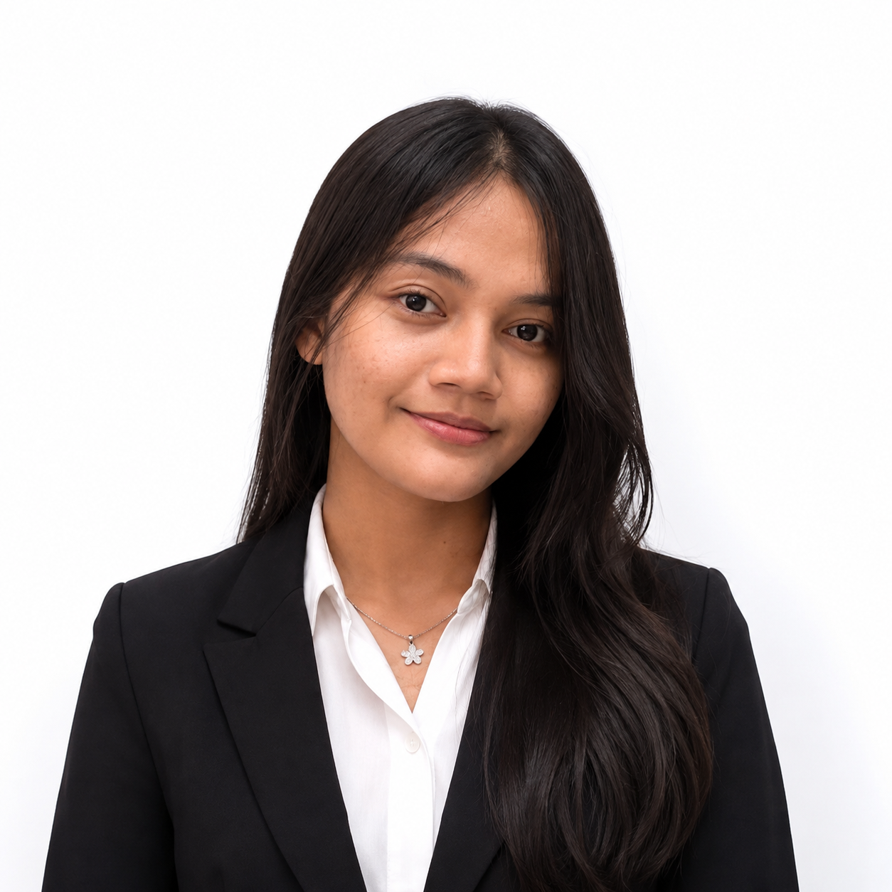
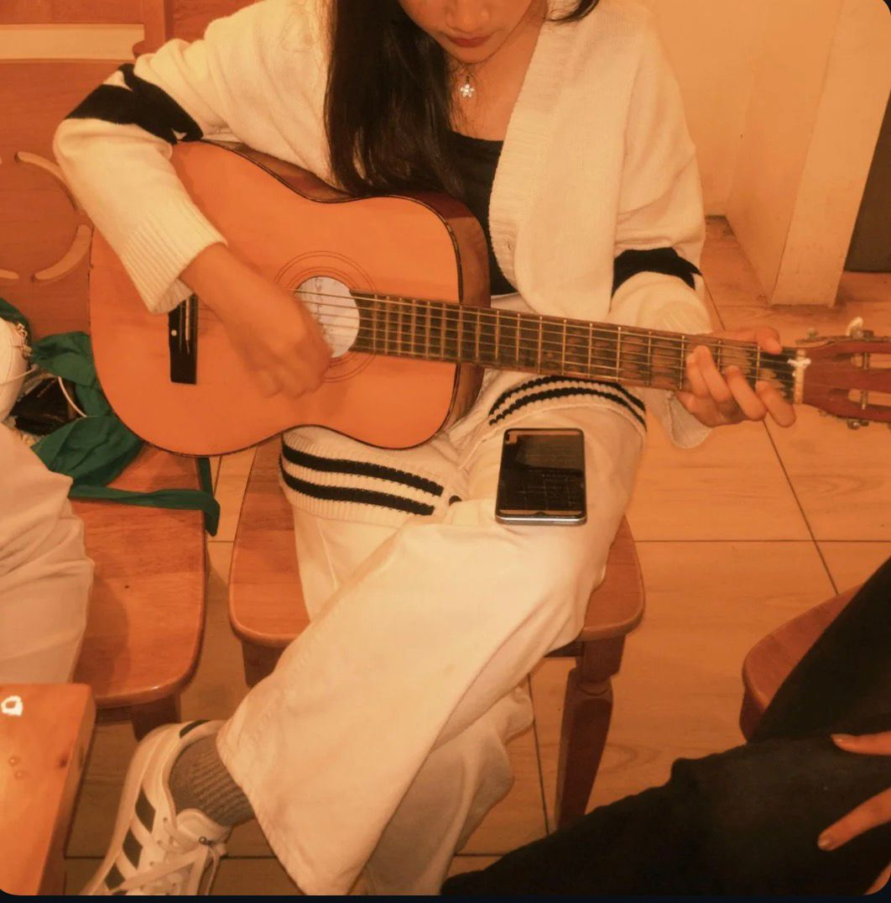

Universitas Negeri Medan
Program Studi Ilmu Komputer
Saya sedang menempuh pendidikan dan mempelajari berbagai dasar ilmu komputer, pemrograman, basis data, serta pengembangan website.
Mahasiswa Ilmu Komputer | Web Development

Halo, nama saya Duma Tesalonika Hutauruk. Saya merupakan mahasiswa semester 3 Program Studi Ilmu Komputer di Universitas Negeri Medan.
Saya tertarik dengan dunia teknologi, khususnya pemrograman, pengembangan website, dan pembuatan aplikasi. Saya juga senang mempelajari hal-hal baru yang dapat meningkatkan kemampuan saya di bidang teknologi.
Program Studi Ilmu Komputer
Saya sedang menempuh pendidikan dan mempelajari berbagai dasar ilmu komputer, pemrograman, basis data, serta pengembangan website.
Saya merupakan siswi SMA Negeri 1 Bandar dan mengambil jurusan MIPA (Matematika dan Ilmu Pengetahuan Alam).
Selama di SMA, saya mempelajari berbagai mata pelajaran di bidang sains dan matematika yang menjadi salah satu dasar ketertarikan saya untuk melanjutkan pendidikan di bidang Ilmu Komputer.
Selama perkuliahan, saya telah mengerjakan beberapa proyek yang membantu saya memahami penerapan ilmu komputer secara langsung. Salah satunya adalah Smart Lost & Found Management System (SELS) menggunakan Java dan MySQL, yang memiliki fitur pengelolaan data barang hilang dan ditemukan serta pencocokan data secara otomatis.
Saya mempelajari cara membuat website menggunakan HTML dan memahami dasar-dasar struktur halaman web.

Beberapa kegiatan yang saya sukai di waktu luang adalah bermain gitar, mendengarkan musik, menonton drama atau film yang sedang tayang, dan mempelajari hal-hal baru yang berhubungan dengan teknologi.
Portfolio ini dibuat pada .
Jika ingin menghubungi saya, silakan mengisi formulir berikut.